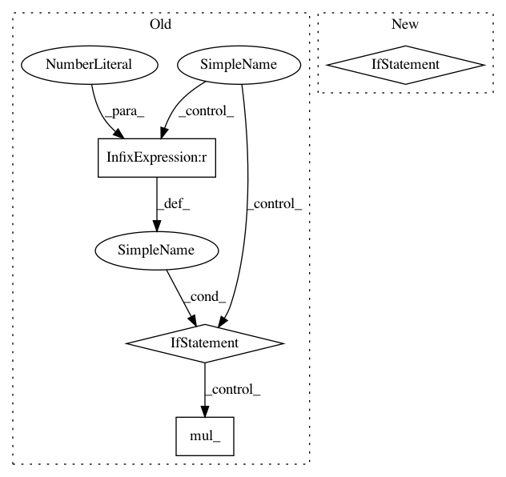

a0cf5566d88533c5caa7a490beb6eb0760eee9b4,torch/optim/sgd.py,SGD,step,#SGD#Any#,76
Before Change
d_p = p.grad
if weight_decay != 0:
d_p = d_p.add(p, alpha=weight_decay)
if momentum != 0:
param_state = self.state[p]
if "momentum_buffer" not in param_state:
buf = param_state["momentum_buffer"] = torch.clone(d_p).detach()
else:
buf = param_state["momentum_buffer"]
buf.mul_(momentum).add_(d_p, alpha=1 - dampening)
if nesterov:
d_p = d_p.add(buf, alpha=momentum)
else:
d_p = buf
p.add_(d_p, alpha=-group["lr"])
return loss
After Change
lr = group["lr"]
for p in group["params"]:
if p.grad is not None:
params_with_grad.append(p)
d_p_list.append(p.grad)
state = self.state[p]
if "momentum_buffer" not in state:
momentum_buffer_list.append(None)
else:
momentum_buffer_list.append(state["momentum_buffer"])
F.sgd(params_with_grad,
d_p_list,
momentum_buffer_list,
weight_decay,
In pattern: SUPERPATTERN
Frequency: 3
Non-data size: 4
Instances
Project Name: pytorch/pytorch
Commit Name: a0cf5566d88533c5caa7a490beb6eb0760eee9b4
Time: 2021-01-21
Author: wanchaol@users.noreply.github.com
File Name: torch/optim/sgd.py
Class Name: SGD
Method Name: step
Project Name: pytorch/examples
Commit Name: f5f63fb9c06cd626ff64a31b976e148c92ff99d1
Time: 2017-03-14
Author: bryan.mccann.is@gmail.com
File Name: OpenNMT/onmt/Optim.py
Class Name: Optim
Method Name: step
Project Name: OpenNMT/OpenNMT-py
Commit Name: 57dac10ec6b131842667bf58746168d9e99de9b3
Time: 2017-03-14
Author: bryan.mccann.is@gmail.com
File Name: onmt/Optim.py
Class Name: Optim
Method Name: step